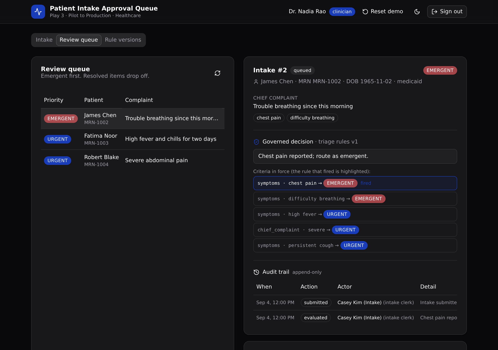

The governed backend under a plausibly AI-built intake tool. A versioned triage rule set, role checks that run on the server, and a full audit trail, so the app is safe to run in production.

The frontend could have shipped in an afternoon from an AI app builder. This project is everything IT needs before that frontend can touch a real patient. Speed is not the argument. Control is: the business logic lives in one typed API layer a technical evaluator can read and trust.
The active rule set decides each priority and records the version and reason on the intake. Older intakes keep the version that routed them.
An auth table plus a per-endpoint role guard. Wrong-role writes are rejected on the server with a 403, never with row-level security.
Submitted, evaluated, claimed, approved, denied. Every change writes one row with the actor and time, and is never updated after.
Every endpoint lives under one API group, intake.
| Verb | Path | What it enforces |
|---|---|---|
| POST | /api:intake/auth/login | Public. Verifies the credential, mints a token, returns the role. |
| POST | /api:intake/submit | Intake clerk. Matches or creates a patient by MRN, opens the intake. |
| POST | /api:intake/evaluate | Intake clerk. Runs the active rules, stamps priority, version, and reason. |
| POST | /api:intake/queue/claim | Clinician. Claims an open queue item. |
| POST | /api:intake/queue/approve | Clinician. Approves a claimed intake. |
| POST | /api:intake/queue/deny | Clinician. Denies a claimed intake with a reason. |
| GET | /api:intake/queue | Clinician or viewer. The queue, emergent first. |
| GET | /api:intake/detail/{intake_id} | Any signed-in user. The intake, its routing rule, and its audit trail. |
| POST | /api:intake/rules/activate | Clinician. Publishes a new triage rule version. |
| GET | /api:intake/rules | Any signed-in user. Every rule version, active flagged. |
| GET | /api:intake/seed | Public. Seeds the demo data (idempotent). |
Hand this repo to your coding agent as a starting point, then adapt the tables, endpoints, and screens to your own domain.
Clone https://github.com/xano-scratch/patient-intake-approval-queue and use it
as the starting template for my app. Read its README and xano/ first to learn the
XanoTS patterns (typed tables, an API group with a pinned canonical slug, per-endpoint
role guards, an append-only audit trail). Then adapt the tables, endpoints, and screens
to: <describe your domain and the one governed job it should do>.Or run it yourself:
git clone https://github.com/xano-scratch/patient-intake-approval-queue
cd patient-intake-approval-queue
npm install
npx xanots login
npm run xano:deployThe deploy prints live URLs. A deployed preview is an ephemeral environment, so shared preview links expire. Redeploy any time for fresh links. The repo is the durable artifact.